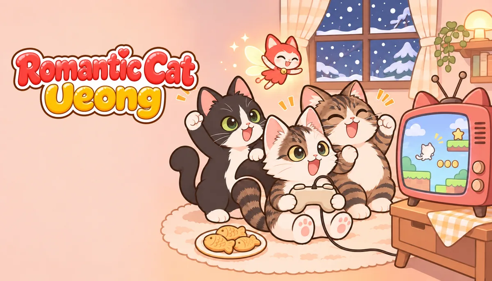
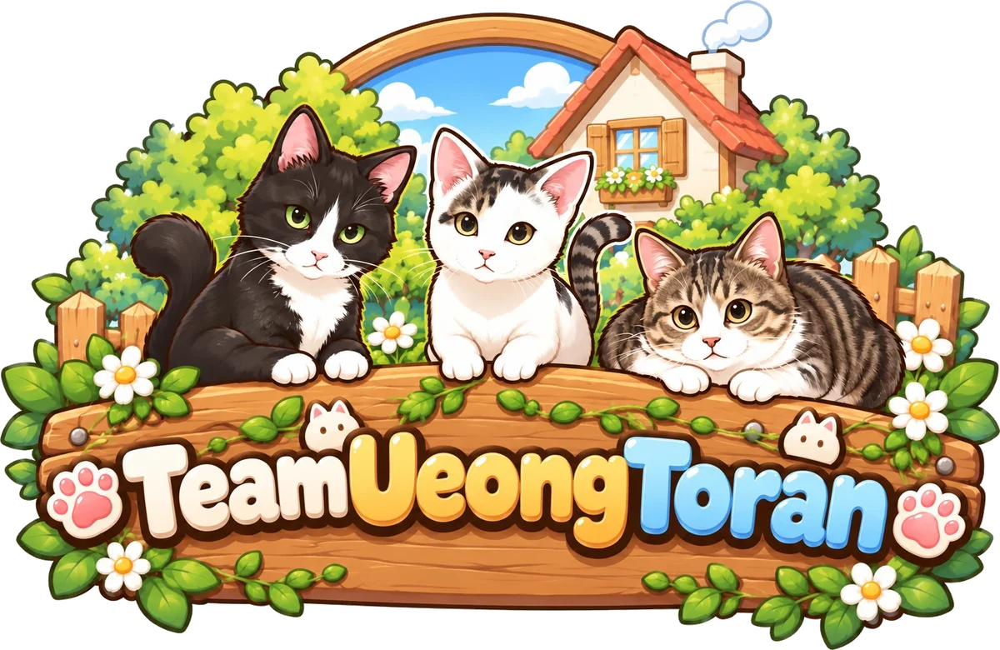

In development
Romantic Cat Ueong
A 2D side-scrolling action game following Ueong the cat. Coming to PC (Steam) and mobile.

TeamUeongToran is an independent game studio in Seoul, Korea. We take the feel of the games we grew up with and bring it to today's devices.

A 2D side-scrolling action game following Ueong the cat. Coming to PC (Steam) and mobile.